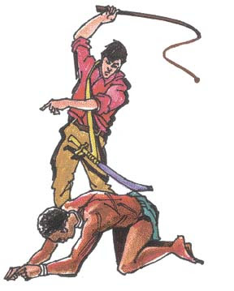
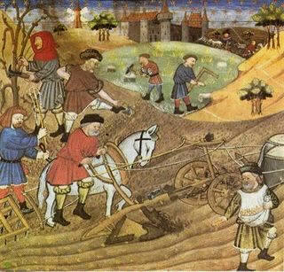
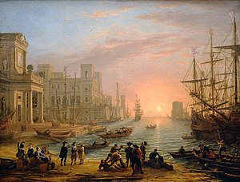

Proceso cronológico del nacimiento, desarrollo y cambio de las diferentes ideas y distintas economías en diferentes sociedades, mostrando la contribución del pensamiento económico dominante a la economía moderna.
Historia de la Economia
La economía es casi tan antigua como el ser humano. Desde que los primeros hombres comenzaron a hacer planificaciones de alimentación y organización de la comunidad social ya estaban haciendo uso de esta ciencia social.
El fin de esta página es mostrar un resumen de cada una de sus décadas, con sus respectivos autores, como se fueron modificando los paradigmas hasta el día de hoy.
Un paso por el tiempo



Mercantilismo
Como primero, el comercio. Principalmente la exportación, y posesión de metales preciosos.
Leer más
Economía clásica
Primera economia moderna. Libre mercado empieza ser considerado como forma natural del funcionamiento.
Leer más
Marxismo y Keynesianismo
Mayores exponentes del comunismo y socialismo. Entre los siglos IXX y XX aparecen como medidas antes crisis mundiales.
Leer más
Neoclasicos y globalización
El mundo toma otro rumbo. La globalización cambia medios de comunicacion, transporte, entre otras cosas.
Leer más